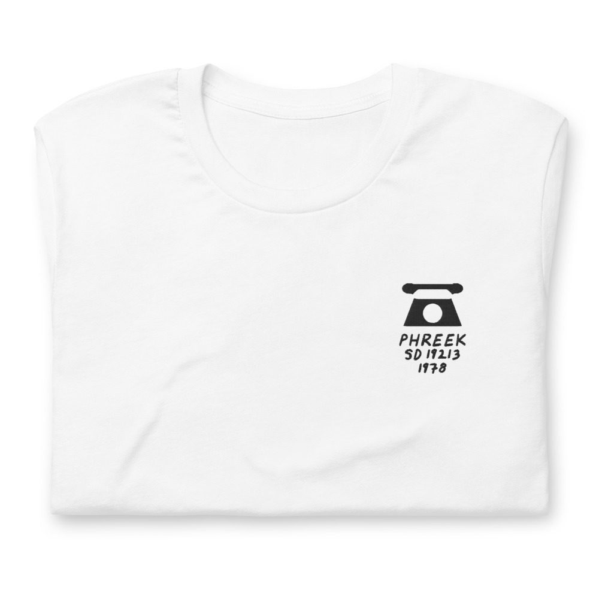
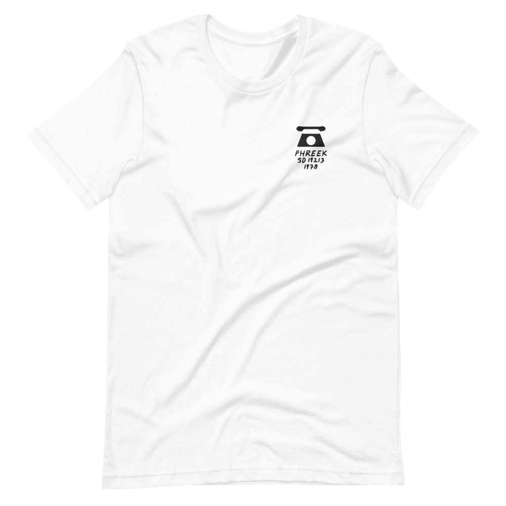

Phreek – Patrick Adams Presents Phreek
Patrick Adams’s disco project, with “Weekend.”
LP · Atlantic SD 19213 · 1978
Ungraded, checked before it ships
Comes with its own shirt: a white tee embroidered on the chest with its title, catalog number and year in my handwriting. Pick a size at checkout. It’s made for you and ships on its own.


Buy $68
Play a track
Side 1
- Weekend6:49
- Everybody Loves A Good Thing7:56
- May My Love Be With You4:15
Side 2
- Much Too Much6:04
- I’m A Big Freak (R*U*1*2)10:19
- Have A Good Day4:05
Backing Vocals
Christine Wiltshire, Dorothy Terrell, Gina Tharps, Infinity, James Calloway, Jocelyn Brown, Judith Whitney, Ken Morris, Leroy Burgess, Pete Warner, Richie Weeks, Roberta Moore
Bass
Norbert Sloley
Congas, Percussion
Michael Lewis
Drums
Richard Taninbaum
Guitar
Ken Mazur, Stan Lucas
Keyboards, Synthesizer
Leroy Burgess, Patrick Adams
Strings, Brass
Babe Clark
Lead Vocals
Christine Wiltshire, Leroy Burgess, Venus Dodson
Voice
Donna McGhee
Produced by Leroy Burgess, Patrick Adams, Jeff Delinko